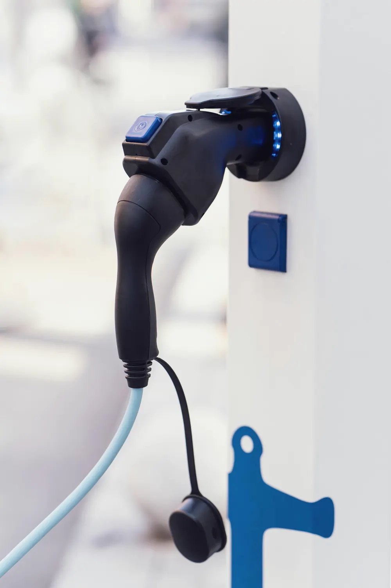
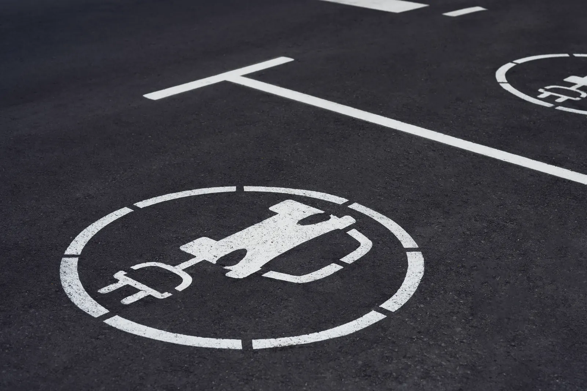

כותרת ומשפט למעלה, ומתחת שלושה לוחות צילום זה לצד זה, אחד לכל סוג לקוח. הלוח הפתוח רחב ומראה משפט הסבר; ריחוף או לחיצה על לוח אחר פותחים אותו, והאחרים מצטמצמים.
מתי משתמשים: עסק שמשרת שלושה קהלים או שלושה סוגי עבודה, וכל אחד רוצה לראות את עצמו כבר במסך הראשון: בית, בניין ועסק; פרטי, עסקי ומוסדי; שיפוץ, בנייה ותחזוקה. לא ליותר מארבעה לוחות, שם הסגורים נהיים צרים מדי לשם, ולא כשיש שירות אחד, שם h4.
הדמו כאן עיצובי-ניטרלי בכוונה. כשהמהלך נכנס לפרויקט, מיובאת רק ההתנהגות: הצבעים, הרדיוסים, הפונטים והצללים יורשים את העיצוב של אותו פרויקט.
מתכננים, מתקינים ומחברים ללוח החשמל עם אישור של חשמלאי מוסמך, בבית, בבניין או בחניון של העסק.

עמדה על הקיר בחניה, מחוברת ללוח של הבית, עם אפליקציה שמטעינה בשעות הזולות.
עמדה לכל דייר, עם חלוקת עלויות לפי צריכה ובלי להעמיס על החשמל של הבניין.

עמדות לעובדים ולאורחים, עם חיוב בכרטיס ודוח צריכה חודשי.
הקוד כאן עומד בפני עצמו. כל טוקן עיצוב נושא ברירת מחדל, מחלקות העזר של המאגר מוטמעות בו, ותגי הסקריפט מסודרים לפי הסדר הנכון. פרויקט שמגדיר --accent או --line משלו יורש אותם אוטומטית. הרכיב הזה מסתמך על dir="rtl".
/* H30 · הירו שלושה לוחות שנפתחים */
/* ---- demo frame and top row (scaffolding, not part of the hero) ---- */
.hf{position:relative;margin-inline:var(--gutter, clamp(24px, 5vw, 96px));border:1px solid var(--line, #e4e4ee);border-radius:var(--r, 14px);overflow:hidden;background:var(--bg, #f7f7fa);isolation:isolate}
.hf-top{position:absolute;inset-inline:0;top:0;z-index:6;display:flex;align-items:center;gap:24px;padding:20px 28px;font-size:15px;font-weight:500}
.hf-top b{font-size:18px;font-weight:800}
.hf-top nav{display:flex;gap:18px;margin-inline-start:auto;opacity:.8}
@media (max-width:760px){.hf-top nav{display:none}}
.hbtn{display:inline-flex;align-items:center;justify-content:center;min-height:52px;padding:0 28px;border-radius:12px;background:var(--accent, #4a3aff);color:var(--accent-ink, #fff);text-decoration:none;
font-size:16px;font-weight:600;white-space:nowrap;transition:transform .18s cubic-bezier(.2,.6,.2,1),box-shadow .3s cubic-bezier(.2,.6,.2,1)}
.hbtn.ghost{background:none;color:inherit;box-shadow:inset 0 0 0 1.5px currentColor}
@media (hover:hover) and (pointer:fine){.hbtn:hover{transform:translateY(-2px)}}
.hkick{font-size:14px;font-weight:600;letter-spacing:.02em;opacity:.75}
.hlead{margin:0;font-size:clamp(17px,1.2vw,20px);line-height:1.55;opacity:.82}
.hmicro{display:flex;flex-wrap:wrap;gap:8px 18px;font-size:14px;opacity:.7}
.hcta{display:flex;flex-wrap:wrap;gap:12px}
/* the resting state is the visible one. opacity:1 on .rv also keeps the no-JS look identical to the look after the entrance */
.rv{opacity:1;transition:opacity .5s cubic-bezier(.2,.6,.2,1),transform .5s cubic-bezier(.2,.6,.2,1)}
.open-anim .rv{opacity:0;transform:translateY(18px);animation:rv-fs 0s 2.5s forwards}
/* --t0: on a page with a header, 0.2s so the header comes down first (motion.md 2) */
.is-in .rv{opacity:1;transform:none;transition-duration:.7s;transition-delay:calc(var(--t0,0s) + var(--i,0) * 90ms)}
.rv-on .rv{animation:none}
@keyframes rv-fs{to{opacity:1;transform:none}}
@media (prefers-reduced-motion:reduce){.rv,.is-in .rv{transition-duration:.01ms!important;transition-delay:0s!important}
.hbtn{transition-duration:.01ms!important}.hbtn:hover{transform:none!important}}
.h30h{display:flex;flex-direction:column;gap:32px;min-height:min(86vh,780px);padding:88px 28px 28px;background:var(--bg, #f7f7fa)}
.h30-top{display:grid;grid-template-columns:minmax(0,1.1fr) minmax(0,.9fr);align-items:end;gap:20px 56px}
.h30-ttl,.h30-side{display:flex;flex-direction:column;align-items:flex-start;gap:16px}
.h30-side{gap:20px}
.h30h h3{margin:0;max-width:16ch;font-size:clamp(32px,min(4vw,7.8vh),60px);line-height:1.05;font-weight:700;letter-spacing:-.01em;text-wrap:balance}
.h30h .hlead{max-width:42ch}
/* minmax(0,…): a closed panel may be narrower than the sentence it hides. The open one takes 2.4 parts */
.h30-row{flex:1;display:grid;grid-template-columns:minmax(0,2.4fr) minmax(0,1fr) minmax(0,1fr);gap:12px;min-height:clamp(280px,40vh,420px);transition:grid-template-columns .7s cubic-bezier(.2,.6,.2,1)}
.h30-row[data-open="1"]{grid-template-columns:minmax(0,1fr) minmax(0,2.4fr) minmax(0,1fr)}
.h30-row[data-open="2"]{grid-template-columns:minmax(0,1fr) minmax(0,1fr) minmax(0,2.4fr)}
.h30-p{position:relative;display:flex;flex-direction:column;justify-content:flex-end;gap:8px;min-width:0;padding:24px;border-radius:20px;overflow:hidden;isolation:isolate;background:var(--ink, #16182b);color:var(--bg, #f7f7fa)}
.h30-p img{position:absolute;inset:0;z-index:-2;width:100%;height:100%;object-fit:cover;display:block;transition:transform 1s cubic-bezier(.2,.6,.2,1)}
/* the name sits in the bottom start corner, so the shade comes from that corner (heroes.md) */
.h30-p::before{content:"";position:absolute;inset:0;z-index:-1;background:linear-gradient(to top left,color-mix(in srgb,var(--ink, #16182b) 85%,transparent) 0%,color-mix(in srgb,var(--ink, #16182b) 45%,transparent) 50%,transparent 80%)}
[dir="ltr"] .h30-p::before{background:linear-gradient(to top right,color-mix(in srgb,var(--ink, #16182b) 85%,transparent) 0%,color-mix(in srgb,var(--ink, #16182b) 45%,transparent) 50%,transparent 80%)}
.h30-p h4{margin:0;font-size:clamp(18px,1.5vw,22px);line-height:1.2;font-weight:700}
.h30-p h4 button{display:flex;align-items:center;justify-content:space-between;gap:12px;width:100%;padding:0;border:0;background:none;color:inherit;font:inherit;text-align:start;cursor:pointer}
/* the whole panel is the button's hit area, and the name stays a heading in the outline */
.h30-p h4 button::after{content:"";position:absolute;inset:0;z-index:1;border-radius:20px}
.h30-p h4 button:focus-visible{outline:none}
.h30-p h4 button:focus-visible::after{outline:2px solid var(--accent, #4a3aff);outline-offset:-4px}
.h30-ic{position:relative;flex:none;width:32px;height:32px;border-radius:50%;background:color-mix(in srgb,var(--bg, #f7f7fa) 22%,transparent);transition:opacity .3s cubic-bezier(.2,.6,.2,1),transform .4s cubic-bezier(.2,.6,.2,1)}
.h30-ic::before,.h30-ic::after{content:"";position:absolute;top:50%;left:50%;width:12px;height:2px;border-radius:2px;background:currentColor;translate:-50% -50%}
.h30-ic::after{rotate:90deg}
.h30-p.on .h30-ic{opacity:0;transform:scale(.6)}
/* the sentence opens by grid rows (0fr to 1fr) and has a fixed width, so it does not rewrap while the panel widens */
.h30-d{display:grid;grid-template-rows:0fr;transition:grid-template-rows .6s cubic-bezier(.2,.6,.2,1)}
.h30-d>div{min-height:0;overflow:hidden}
.h30-d p{width:34ch;margin:0;font-size:16px;line-height:1.5;opacity:0;transition:opacity .4s cubic-bezier(.2,.6,.2,1)}
.h30-p.on .h30-d{grid-template-rows:1fr}
.h30-p.on .h30-d p{opacity:.92;transition-delay:.25s}
.open-anim .h30-p img{transform:scale(1.08);animation:rv-fs 0s 2.5s forwards}
.is-in .h30-p img{transform:none;transition-delay:calc(var(--t0,0s) + var(--i,0) * 90ms)}
.rv-on .h30-p img{animation:none}
@media (prefers-reduced-motion:reduce){.h30-row,.h30-d,.h30-d p,.h30-ic,.h30-p img{transition-duration:.01ms!important;transition-delay:0s!important}}
/* phone: the panels stack, and the open one takes the height instead of the width */
@media (max-width:860px){.h30h{gap:20px;min-height:0;padding:72px 20px 20px}
.h30-top{grid-template-columns:1fr;gap:14px}.h30-ttl{gap:12px}.h30-side{gap:16px}
.h30h h3{font-size:clamp(28px,7.4vw,36px)}
.h30h .hcta{width:100%;flex-wrap:nowrap}.h30h .hcta .hbtn{flex:1;padding-inline:16px}
.h30-row,.h30-row[data-open="1"],.h30-row[data-open="2"]{flex:none;height:clamp(300px,42vh,380px);min-height:0;grid-template-columns:1fr;gap:8px;transition:grid-template-rows .7s cubic-bezier(.2,.6,.2,1)}
.h30-row{grid-template-rows:minmax(0,2.4fr) minmax(0,1fr) minmax(0,1fr)}
.h30-row[data-open="1"]{grid-template-rows:minmax(0,1fr) minmax(0,2.4fr) minmax(0,1fr)}
.h30-row[data-open="2"]{grid-template-rows:minmax(0,1fr) minmax(0,1fr) minmax(0,2.4fr)}
.h30-p{padding:16px 20px;border-radius:16px}.h30-p h4 button::after{border-radius:16px}
.h30-d p{width:auto;font-size:15px}}<script>if(matchMedia("(prefers-reduced-motion:no-preference)").matches)document.documentElement.classList.add("open-anim")</script>
<div class="hf"><div class="hf-top"><b>לוגו</b><nav><span>שירותים</span><span>פרויקטים</span><span>אודות</span></nav></div>
<section class="h30h" id="h30">
<div class="h30-top">
<div class="h30-ttl">
<span class="hkick rv">עמדות טעינה לרכב חשמלי</span>
<h3 class="rv">טעינה מלאה בבוקר, בלי לחפש עמדה פנויה</h3>
</div>
<div class="h30-side">
<p class="hlead rv">מתכננים, מתקינים ומחברים ללוח החשמל עם אישור של חשמלאי מוסמך, בבית, בבניין או בחניון של העסק.</p>
<div class="hcta rv"><a class="hbtn" href="#h30">לבדיקת התאמה</a><a class="hbtn ghost" href="#h30">מחירון</a></div>
</div>
</div>
<div class="h30-row" data-open="0">
<div class="h30-p on rv">
<img src="https://liavwebdesign-spec.github.io/motion-vault/assets/media/real/s10/wallbox.webp" alt="עמדת טעינה על קיר לבן, והתקע של הכבל מחובר אליה" fetchpriority="high" decoding="async">
<h4><button type="button" aria-expanded="true" aria-controls="h30-d0"><span>לבית פרטי</span><span class="h30-ic" aria-hidden="true"></span></button></h4>
<div class="h30-d" id="h30-d0"><div><p>עמדה על הקיר בחניה, מחוברת ללוח של הבית, עם אפליקציה שמטעינה בשעות הזולות.</p></div></div>
</div>
<div class="h30-p rv">
<img src="https://liavwebdesign-spec.github.io/motion-vault/assets/media/real/s10/resident.webp" alt="אישה מדברת בטלפון ליד רכב לבן שמחובר לטעינה מול הכניסה לבניין" decoding="async">
<h4><button type="button" aria-expanded="false" aria-controls="h30-d1"><span>לבניין משותף</span><span class="h30-ic" aria-hidden="true"></span></button></h4>
<div class="h30-d" id="h30-d1" inert><div><p>עמדה לכל דייר, עם חלוקת עלויות לפי צריכה ובלי להעמיס על החשמל של הבניין.</p></div></div>
</div>
<div class="h30-p rv">
<img src="https://liavwebdesign-spec.github.io/motion-vault/assets/media/real/s10/lot-paint.webp" alt="סימון של עמדת טעינה צבוע בלבן על האספלט בחניון" decoding="async">
<h4><button type="button" aria-expanded="false" aria-controls="h30-d2"><span>לחניון של עסק</span><span class="h30-ic" aria-hidden="true"></span></button></h4>
<div class="h30-d" id="h30-d2" inert><div><p>עמדות לעובדים ולאורחים, עם חיוב בכרטיס ודוח צריכה חודשי.</p></div></div>
</div>
</div>
</section>
</div>// in view = fire. Measured directly on scroll and resize, not through IntersectionObserver:
// an observer does not update while the tab is throttled (and on a real site the hero is usually
// on screen at load anyway), and an entrance that never fires leaves the hero invisible.
function inView(el,f){
var ro;
function chk(){
var r=el.getBoundingClientRect();
if(r.top<innerHeight*.9&&r.bottom>0){off();f();}
}
function off(){removeEventListener("scroll",chk);removeEventListener("resize",chk);if(ro)ro.disconnect();}
addEventListener("scroll",chk,{passive:true}); addEventListener("resize",chk);
// a layout change with no scroll (a bar above it closes, a font swaps in) can also bring it into view
if(window.ResizeObserver){ro=new ResizeObserver(chk);ro.observe(document.body);}
requestAnimationFrame(chk); setTimeout(chk,300);
}
function enter(root){
var els=root.querySelectorAll(".rv");
els.forEach(function(el,i){if(!el.style.getPropertyValue("--i"))el.style.setProperty("--i",i);});
// a script that ran late, after the 2.5s CSS failsafe already showed the hero: keep it shown, no second entrance
if(els.length&&getComputedStyle(els[0]).opacity==="1")root.classList.add("is-in");
root.classList.add("rv-on");
inView(root,function(){root.classList.add("is-in");});
}
(function(){
var root=document.getElementById("h30"), row=root.querySelector(".h30-row"), ps=[].slice.call(root.querySelectorAll(".h30-p"));
var fine=matchMedia("(hover:hover) and (pointer:fine)"), t;
enter(root);
function open(k){
row.dataset.open=k;
ps.forEach(function(p,i){
var on=i===k, d=p.querySelector(".h30-d");
p.classList.toggle("on",on); p.querySelector("button").setAttribute("aria-expanded",String(on));
// a closed sentence leaves the tab order and the screen reader, not only the eye
if(on)d.removeAttribute("inert"); else d.setAttribute("inert","");
});
}
ps.forEach(function(p,i){
p.querySelector("button").addEventListener("click",function(){open(i);});
// a mouse opens by pointing, after a short pause, so a cursor that only crosses a panel does not open it
p.addEventListener("mouseenter",function(){if(!fine.matches)return; clearTimeout(t); t=setTimeout(function(){open(i);},120);});
p.addEventListener("mouseleave",function(){clearTimeout(t);});
});
})();